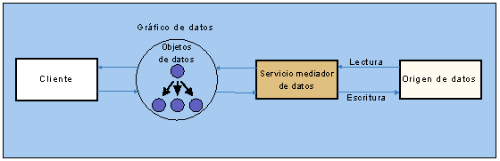
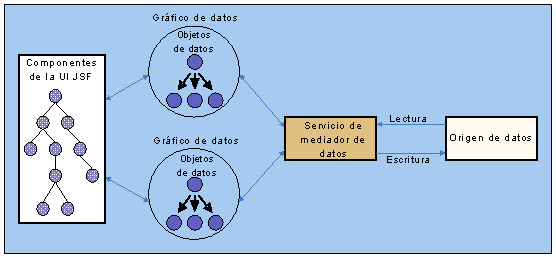
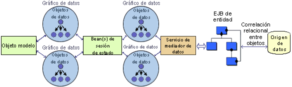

| Concepto: Infraestructuras de aplicaciones web |
 |
|
| Elementos relacionados |
|---|
IntroducciónLos objetos de datos de servicio (SDO) son una especificación de un modelo de programación que da acceso a datos de fondo de manera uniforme y desconectada, con orígenes de datos independientes. El modelo permite que los datos sean recuperados desde cualquier tipo de origen de datos (base de datos relacional, beans de entidad EJB, servicios web, orígenes de datos XML, etc.) y se presenten de manera uniforme como gráfico de datos estructurado (Datagraph). Los SDO ofrecen la posibilidad de realizar operaciones desconectadas mediante la recuperación de gráficos de datos independientes de cualquier conexión o transacción de fondo . Aún así, se trata de una especificación propuesta enviada a través de JCP como solicitud de especificación Java (JSR) 235. ArquitecturaLa arquitectura de SDO utiliza una capa de acceso a datos uniforme (Servicio de mediador de datos) para devolver gráficos de datos a clientes desde orígenes de datos heterogéneos. La figura 4 muestra los componentes de la arquitectura de SDO.  Figura 4: Objeto de datos de arquitectura de SDO Un objeto de datos (DataObject) contiene datos reales (por ejemplo, valores primitivos o líneas de datos de una base de datos relacional) y posibles referencias a otros objetos de datos. Puede ser inspeccionado para determinar su tipo, sus relaciones y sus restricciones. Gráfico de datosUn gráfico de datos(DataGraph) contiene un conjunto de objetos de datos y normalmente representa la unidad de transferencia entre componentes en la arquitectura. Registra todos los cambios de datos, incluidos los objetos de datos nuevos, modificados o suprimidos. Servicio de mediador de datosEl servicio de mediador de datos es el responsable de la interacción con el origen de datos, con el fin de producir gráficos que representen los datos. La representación de datos nativos se convierte en representación gráfica de SDO mediante este servicio conectable. El Mediador también es el responsable de aplicar cambios a los gráficos de datos en el origen de datos. Aplicabilidad de infraestructurasLa tecnología de SDO promete una integración fácil entre herramientas e infraestructuras. En el contexto de JSF y otras infraestructuras de MVC, se pueden considerar las dos soluciones siguientes: Vinculación de componentes de la interfaz de usuario con SDO (JSF) En una infraestructura JSF, los valores de los componentes de la interfaz de usuario pueden vincularse declarativamente a SDO para recuperar datos. Por ejemplo, un componente de una tabla de datos podría vincularse a un SDO para recuperar sus valores desde un origen de datos de fondo. Esta combinación facilita la conectividad de datos desde un componente de la interfaz de usuario sin necesidad de programación. La Figura 5 muestra la arquitectura resultante de la vinculación de componentes de la interfaz de usuario JSF con SDO.  Figura 5: Uso de SDO con JSF Objeto modelo para SDO (cualquier infraestructura MVC) La capa de modelo de una infraestructura MVC podría utilizar SDO para acceder a datos de fondo. La Figura 6 muestra un ejemplo de cliente modelo que utiliza SDO para acceder a datos conservados mediante EJB de entidad. El objeto modelo utiliza gráficos de datos devueltos por una fachada EJB de sesión sin estado. Esta fachada de bean de sesión, a su turno, recupera los gráficos de datos del mediador, que actúan como una fachada de datos para el mecanismo de conservación basado en EJB de entidad.  Figura 6: Uso de SDO con objetos modelo y EJB RecursosLos siguientes enlaces proporcionan información adicional relacionada con las infraestructuras de la aplicación y las tecnologías de componentes que se explican en este documento:
|
© Copyright IBM Corp. 1987, 2006. Reservados todos los derechos. |